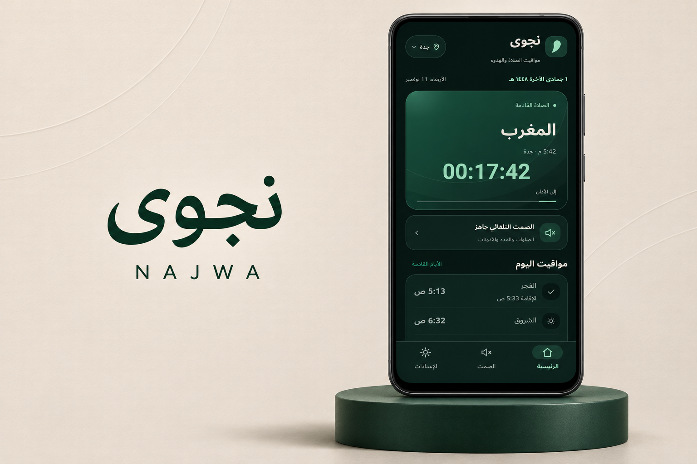

مدينتك، أينما كنت
أكثر من 459 ألف مكان في 246 دولة وإقليم، مع اختيار طريقة الحساب وإدخال موقع مخصص.
نجوى 1.2.1 · تجربة أكثر هدوءًا
للحظة الصلاة مكانها. مواقيت واضحة، وتنبيهات مدروسة، وهدوء تختاره. كل ذلك في تجربة بسيطة، قريبة منك.
تنزيل مباشر · Android 8.0 فأحدث · مجاني ومفتوح المصدر

مصمّم للحظة التي تستحق
من أول أذان إلى نهاية الصلاة، خيارات واضحة تمنحك التحكم دون تعقيد.
أكثر من 459 ألف مكان في 246 دولة وإقليم، مع اختيار طريقة الحساب وإدخال موقع مخصص.
صمت اختياري بعد الأذان بـ20 ثانية. حدّد المدة لكل صلاة، ودع نجوى يستعيد وضع الرنين السابق.
ويدجت بأحجام متنوعة، خلفية قابلة للضبط، وتاريخ هجري مع عداد للصلاة والإقامة.
هوية مدار السكينة
ألوان زمردية، ومساحات مريحة، وعدّاد يمنح الموعد وضوحه.
مواقيت اليوم والعدّاد في مكان واحد.


مقاسات مرنة. تاريخ هجري. من الأذان إلى الإقامة.
الأذان بصوتك المختار، والإقامة بإشعار مرئي.
صورة الافتتاح تصميم دعائي بمساعدة الذكاء الاصطناعي. يحتوي المعرض على معاينات الواجهات الأصلية؛ اضغط الصورة لتكبيرها. يختلف إطار إشعارات النظام بحسب الهاتف.
بداية مطمئنة
خطوات قصيرة، لتكون التجربة كما تحب.
العربية · English · Bahasa Indonesia
اردو · বাংলা · हिन्दी · Türkçe
نزّل ملف APK وثبّته. اسمح بالتثبيت من مصدر التنزيل إذا طلب Android ذلك.
اختر المدينة وطريقة الحساب، ثم راجع المواقيت مع التقويم المحلي المعتمد.
أتح الإشعارات والمنبّهات الدقيقة. وللصمت التلقائي، أكمل خطوة إذن التحكم في الرنين.
أضف الويدجت إلى الشاشة الرئيسية، واختر مقاسه ومدة الإقامة المناسبة لمسجدك.
مساحة للسكينة، في يومك
الإصدار 1.2.1 · البناء 111 · ملف موقّع بحجم 18.4 ميبيبايت
بصمة SHA-256 لملف هذا الإصدار:
33696188139c6e22cff627a1e3720b70988d40c432c927ccc595f5cf358eff7eنجوى مفتوح المصدر بترخيص Apache 2.0. يمكنك الاطلاع على الشفرة وتعديلها والمساهمة في تحسينها. لا حسابات، ولا إعلانات، ولا أدوات تتبع.
ساهم في نجوى على GitHub ↗بيانات الأماكن من GeoNames. الإقامة حسب إعدادك وليست موعدًا معتمدًا للمسجد.